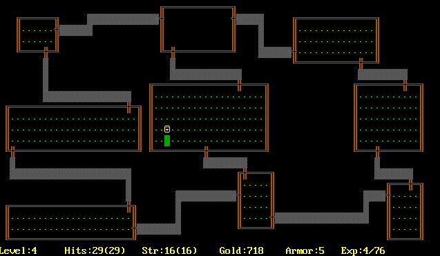
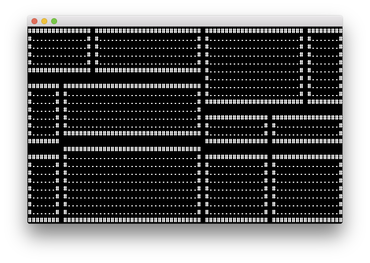
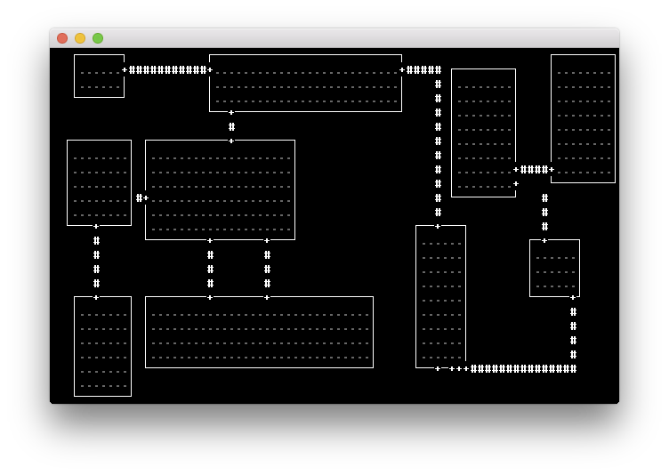
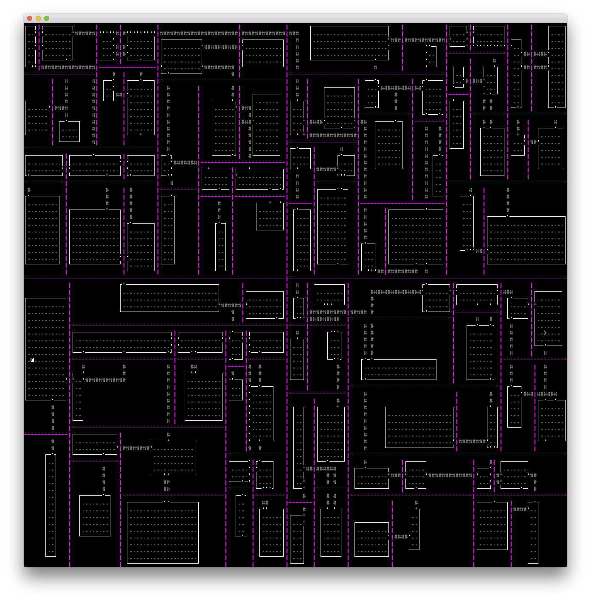
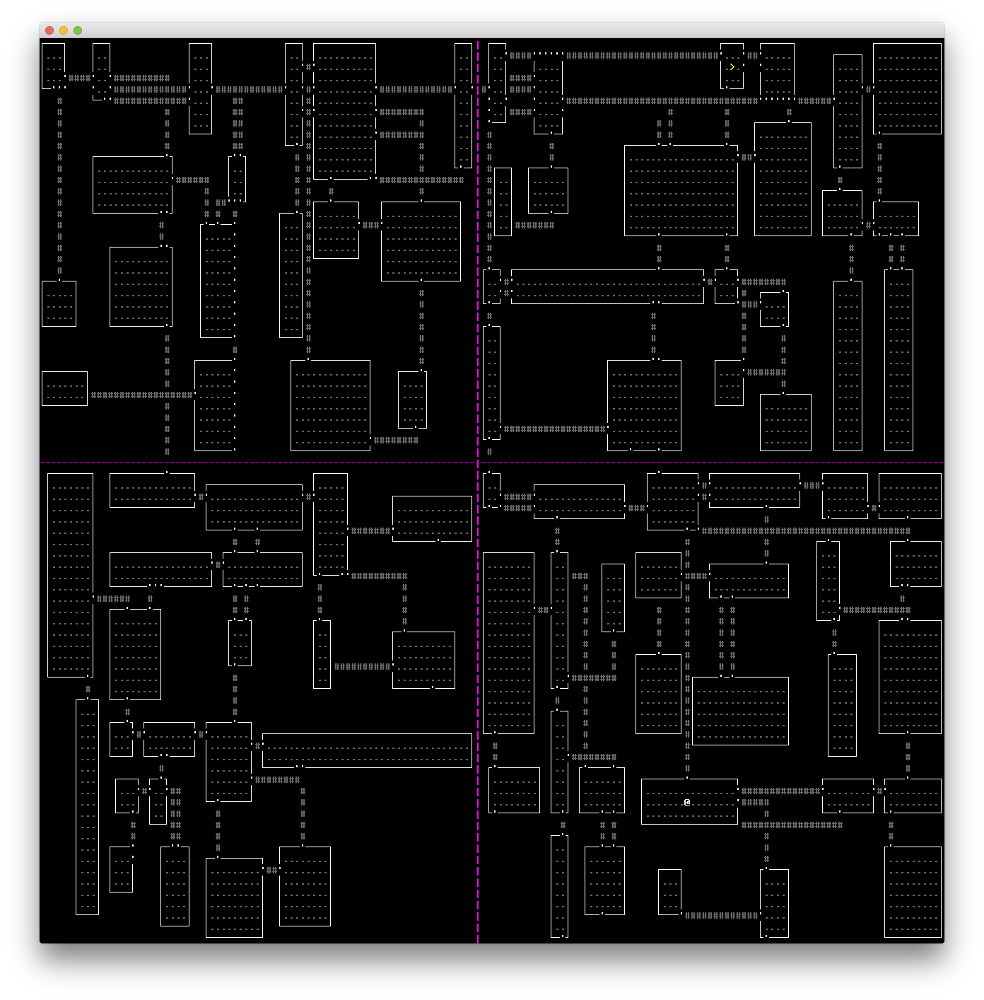
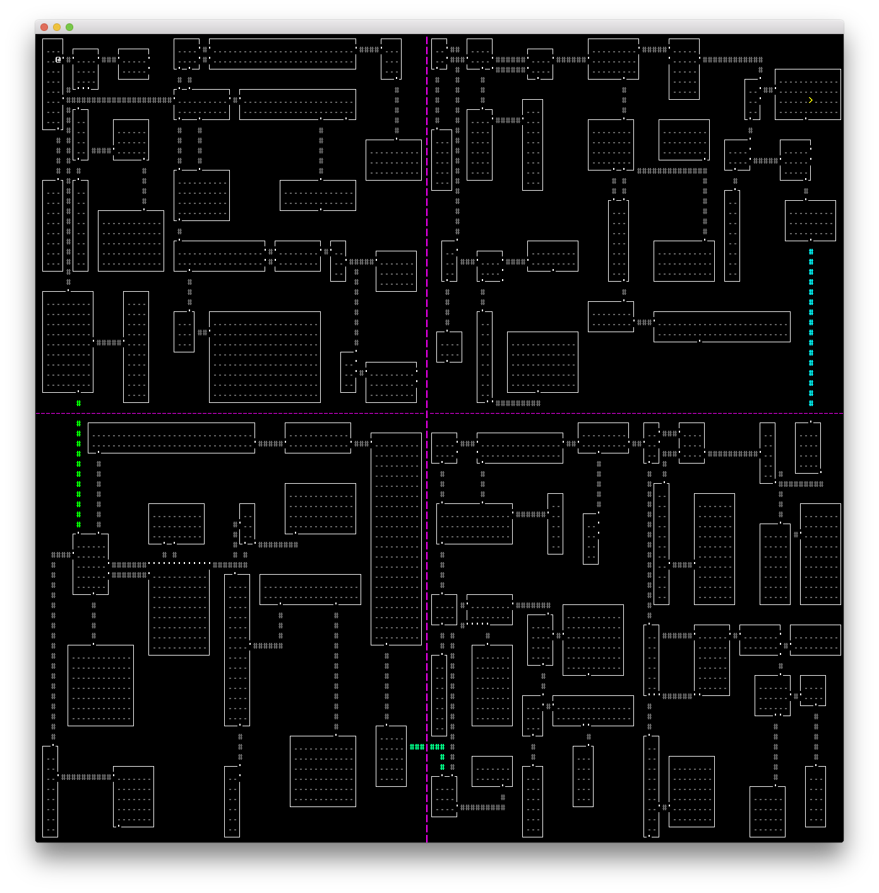

This year I participated in Ludum Dare 38, a 48-hour game programming "competition." I've been thinking about trying my hand at a roguelike for a while now, and it seemed like the perfect opportunity to give it a shot. I made Rogue Basement, a bare-bones, single-level game with ASCII graphics.
In this article, I'll cover the game design decisions I made, how they affect the player's experience, and a bit of how they're implemented.
A "roguelike" is a game that is "like Rogue," a text-based game from the 1980s that looks like this:

Typical features of these games include:
The combination of these features makes the games fun to play over and over again. You have to play a lot to get good, but since the game is procedurally generated, you're always facing new situations. You have to use your wits to survive.
I started on Friday night with a level generator. When you're time-constrained, you have to make very careful decisions about where to innovate, and I chose to stick to a roguelike trope for my basic layout: boxy rooms connected by narrow corridors, with doors where corridors meet rooms.
I could have placed a bunch of rooms randomly and made sure each one was connected to another, but it's tricky to use space efficiently that way. A common way to avoid this problem is to use a binary space partitioning tree.
The basic idea here is that you take a rectangular area, like this:
+----------------------------------------+| || || || || || || || || || || |+----------------------------------------+
Divide it along the X or Y axis at a random point, like this, and label each side:
+----------------------------------------+| | || | || | || | || | || a | b || | || | || | || | || | |+----------------------------------------+
Within each side, divide again on the other axis at a random point:
+----------------------------------------+| | || aa | ba || | ||-----------------| || | || |----------------------|| | || | || ab | bb || | || | |+----------------------------------------+
Divide some more...
+----------------------------------------+| | | | || aaa | aab | baa | bab || | | | ||-----------------| | || | | | || | |----------------------|| | | | || aba | abb | | || | | bba | bbb || | | | || | | | |+----------------------------------------+
When the cells get too small, stop dividing. Inside each cell, decide how to use the space. The most basic strategy is to just completely fill each cell. Here's an actual screenshot I took when I got to this point:

But it's more interesting ot mix it up with different sizes of rectangles.
+----------------------------------------+| +--+ | +------+| +------+ | || | | | | || | | |+-----+|| +--+ | +------+| | | || |||-----------------| | | || ||| |+--+ | +------+ |+-----+|| || | |----------------------|| +----+ || | |+-----+| || | | || | || ||+-----+ || | | |+--+ || ||| | || +----+ | || ||| | || | |+-----+|+-----+ |+----------------------------------------+
You probably noticed I annotated all the cells with aab and such. We'll use that information to add corridors. For every pair of areas that share the first 2 letters of their identifier ("siblings in the tree"), we add an L-shaped corridor from a random point in one to a random point in the other. If a point is already inside a room, we'll leave it alone. If a point is on a wall, we'll turn it into a door.
+----------------------------------------+| +--+ +------+| +------+ || | '####' || | | +-----+|| +--+ +------+| | '####' |||-----------------| | | | ||| +--+ | +------+ +-----+|| ######' | |----------------------|| +-'--+ | | |+-----+ || | | | | || | +-----+ || | | +--+ || '#' | || +----+ || | | | || |+-----+ +-----+ |+----------------------------------------+
Now we do it again, but the random point in each section will come from a random room in each respective section:
+----------------------------------------+| +--+ +------+| +------+ || | '####' || | | +-----+|| +--+ +'-----+| | '####' ||| # | | | | ||| #+--+ | +-'----+ +-----+|| ######' | | # || +-'--+ #| | |+----'+ || | | #| | || | +-----+ || | +##+--+ || '#' | || +----+ || | | | || |+-----+ +-----+ |+----------------------------------------+
And finally we'll do it again to the top-level pair:
+----------------------------------------+| +--+ +------+ +------+ || | '####' '# | | +-----+|| +--+ +'-----+# | '####' ||| # # | | | ||| #+--+ # +-'----+ +-----+|| ######' | # # || +-'--+ #| | #+----'+ || | | #| | #| | +-----+ || | +##+--+ #' '#' | || +----+ | | | | || +-----+ +-----+ |+----------------------------------------+
And here's how it looked during development:

We now have a few guarantees:
a vs everything under b, for example), there is exactly one path between them.That last point has some good and bad ramifications. On the bad side, it worsens replayability, because the corridors are roughly organized the same way from game to game. I noticed this while playtesting; after 3 games it's obvious that the rooms generally have the same layout.
But those characteristics allowed me to take a simple approach to matching the theme of Ludum Dare 38: "A Small World." I realized the first two splits don't have to be random; if they always split the sections evenly, then the map will have 4 even quadrants. I used this to create 4 distinct areas of increasing difficulty, so I could have a "one-level roguelike" with some actual progression.
I split up the map like this:
+-------------------+--------------------+| | || | || aa | ba || (start here) | (end here) || | | ^ ||---------|---------+---------|----------|| v | | || | || ab -------> bb || | || | |+----------------------------------------+
The player starts in aa and moves to ab, then bb, then ba, where the goal is.
Here's another map from early development, which splits the map in this way:

And here's one with just the first two partition lines, so you can see how the map is divided:

And finally, here are the hallways that mark the transitions between each section:

Originally the colors were just for debugging, but I ended up leaving them in place because they seem special.
To add variety, I created a rooms.csv file to define a few room types:
Monster ItemShape, Difficulty, Monsters, Chance, Color, Density, Densitybox_random, 0.00, *, 1.00, #666666, 5.00, 5.00box_random, 1.00, *, 1.00, #886666, 5.00, 4.00box_random, 2.00, *, 1.00, #668866, 5.00, 3.00box_random, 3.00, *, 1.00, #886688, 5.00, 2.00box_full, *, verp_1 0.20, #6666ff, 2.00, 4.00|verp_2|verp_3|verp_4,
So within each quadrant, there is an 80% chance a room will have shape box_random, a quadrant-specific color, 5 monsters per 100 tiles, 5 items per 100 tiles, and contain any area-appropriate monster. But there is a 20% chance that the room will have the shape box_full (fill its entire BSP tree cell) and contain only verps, 2 per 100 tiles.
The first inhabitant of the world is the player, represented by an @ (because the cell with the @ is "where you are at"). All world inhabitants, henceforth called "monsters" (after all, humans are the real monsters) and defined in monsters.csv:
id, Char, Color, Difficulty, Chance, Behaviors, hp_max, strength, itemsplayer, @, #ffffff, -1, 0.00, keyboard_movement, 100, 5.00,
"Difficulty" determines which quadrant a monster can spawn in. The player is a special case, so the level generator ignores it. The player moves in response to keyboard events, has 100 hit points, and hits other monsters for 5 damage. (The combat system in Rogue Basement is not sophisticated. There is no randomness. Remember, I had to be careful about where to spend innovation-points!)
Generally speaking, NPCs (non-player characters) in video games and tabletop RPGs are differentiated based on three important things:
All of those things affect the player's behavior, strategy, and tactics. For a time-constrained game like Rogue Basement, I wanted to stick to the absolute basics.
The monsters are all defined in a CSV file (monsters.csv). The very first monster I added was v, the "verp":
id, Char, Color, Difficulty, Chance, Behaviors, hp_max, strength, itemsverp, v, #ffff00, 0.00, 1.00, beeline_visible, 10, 2.00,|random_walk
In human terms, that definition reads as: "The 'verp' monster, represented by a yellow v, appears in difficulty-zero rooms (first quadrant) with a random weight of 1.0, moves randomly unless it sees the player in which case it moves toward them, has 10 hit points, does 2 damage to the player when hitting, and has no items at the game start."
Behaviors are implemented as Python classes. After the player moves, each monster has a chance to move as well. Behaviors can be stacked, meaning that if one behavior decides it can't do anything, control can be passed to the next behavior in the list. So the verp's beeline_visible behavior either says "I see the player, I move toward them" or "I do not see the player, let some other behavior act this turn."
After adding the verps, I wanted to balance them out with a monster that attacks from a distance. I started by defining a behavior range_5_visible which acts like beeline_visible, but instead of trying to move onto the player's space, the monster tries to be exactly 5 tiles away. If the player approaches the monster, it will run away unless it is backed into a corner.
I attached this behavior to a new enemy type, the wibble (w). But a monster that only runs away isn't very challenging! So it was time to deepen the simulation by adding items.
Items have simple characteristics:
I only had time to add one kind of item: the rock (*). The rock has one use: you can throw it. When you do, the game spawns a new enemy with this definition:
id, Char, Color, Difficulty, Chance, Behaviors, hp_max, strength, itemsrock_in_flight, *, #c1a073, -1, 0, path_until_hit, 2, 2,
Since its "difficulty" is -1, it never spawns in the initial level. Its only behavior is to move along a path until it hits a wall, a monster, or the player. It has 2 hit points.
This is a special item, so the game ignores the strength and items attributes in the CSV file. Instead, the rock_in_flight's strength value is taken from the monster that threw the rock, and the original rock item is added to the rock_in_flight's inventory! When the rock_in_flight's path_until_hit behavior detects that its life is over, the rock_in_flight "dies" and the contents of its inventory (the rock) are dropped on the ground.
Now that I had throwable rocks, I could put a couple in each wibble's inventory and give them the ability to throw them. The wibble definition looked like this:
id, Char, Color, Difficulty, Chance, Behaviors, hp_max, strength, itemswibble, w, #90582c, 0.00, 20, range_5_visible 10, 2, ROCKx1|throw_rock_slow|sleep,
I added a "sleep" behavior to differentiate wibbles from verps. When the player isn't around, verps are hyperactive and run around randomly; wibbles sit and meditate. It seemed in keeping with their fighting styles.
That all worked great, but when wibbles ran out of rocks, the game got really easy! So I added another behavior, pick_up_rocks, which makes a wibble either move toward any adjacent rocks, or pick them up if it's standing on one.
The "conservation of rocks" principle introduces a new tactic into the game: players can pick up all the rocks to deprive the wibbles of their ammunition. Fortunately the player's backpack is infinitely large!
At this point, combat consisted of punching verps and dodging or punching rocks. (Yeah, you can punch rocks! They are just monsters after all!) I wanted to make it possible to avoid almost all damage, though, by understanding the game's systems, and the verps made it too hard to do that by being relentless.
So I made every hit by the player stun the target monster for 2 turns. This is done using a behavior called stunnable, which just says "if I've been hit within the last 2 turns, turn blue and do nothing."
For experienced roguelike players this makes the game easy once you figure it out, but I believe it's still a rewarding experience to figure it out in the first place. It is very, very difficult to make a game by yourself in 48 hours that has more than a few minutes of worthwhile gameplay, so I was aiming to just make those few minutes as good as possible and then let players feel like they could put it down after a good experience.
To make each section its own challenge, I decided to have the colored hallways between sections heal the player completely. This is another difficulty decrease that I could probably have left out, but I decided to err on the side of easy because I knew I had some user interface issues and wanted to be "extra" fair to players.
I took 90 minutes to write 4 tracks, adding up to 11 minutes of music. Each map quadrant plays one of the tracks. You can listen to them here.
The music fades down when you're in a colored hallway and fades up again when you enter a room in a map quadrant. My intention is to build tension and give the player a clue, in addition to the different colors, that the monsters are about to get tougher.
Features I had planned to add but didn't:
From past experience, I knew from the start that scope was always a problem, so I tackled the highest-priority mechanics first, which means I ended up with a real game instead of a tech demo.
It's very difficult to tune for difficulty without time to playtest and fix things! I kept making the game easier because developers almost always make games too hard on the first pass, and I wanted to overcompensate to make it more likely that people would finish it in one sitting.
Since judging hasn't started yet, I don't know if I was successful.
Every time I moved some data out of Python code into a CSV file, it got 10x easier to add new content, but not for the reason you might thing. Yes, copy/pasting CSV rows is an easy way to add new things, but the act of designing the file format made me think about how the whole program worked and put flexible systems in place that would let me do more cool stuff later.
The week before Ludum Dare 38, I worked on an ASCII user interface and roguelike development framework. I didn't want to spend a bunch of time making a crappy title screen, I wanted to focus on gameplay! By writing and releasing the framework, I had all the relevant APIs in memory as soon as the competition started, and I could get going immediately on the important stuff.
The music is really simple, but it adds a huge amount of atmosphere and is a strong signal of progression. It was time well spent, especially since when I made it (the middle of the night) my programmer brain wasn't working anymore.
May the odds be ever in your favor.